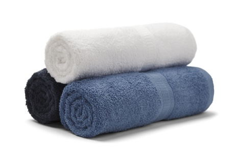
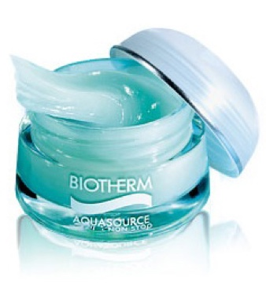

Even expensive products or visits to clinics cannot help moisture-lacking skins from drying up and aging quickly. Thus the beauty secret of skin beauties lies in filling up each and every inner cells of your skin with moisture by utilizing any method possible. From basic must-follow principles to quick moisturizing tips for when you’re lazy or tired – we present you the 24/7 moisturizing plan to keep a dewy skin all day long!
Right After Facial Cleansing
Guess when our skin dries up the easiest? Surprisingly, the answer is right after you wash your face. After the cleansing process, the cleanser washes away not only the make-up residues, bodily wastes and dirt but also the moisture and sebum barriers of the skin. As soon as the moisture dries up from the outer layer of the skin, all the moisture inside your skin quickly evaporates into the air. This is when immediate moisturization becomes necessary. Manage your movement routine to begin your skin care as soon as possible.

After cleansing, do not rub your face hard with a towel. Softly dab the towel to dry yourself. Note that a lot of people with beautiful skin do not use towels at all.
Before all the moisture dries up, apply your first product. Have your watery toners and cotton balls at hand in your powder room.
Keep the morning cleansings simple. People with neutral and dry skin type do not need cleansers, and can wash only with water. Ultra dry skin types can ju st wipe with watery toners. Oily and acne skin types need to wash oily spots like your nose and forehead with foam and rinse off.
Before Going To Bed
The most important time to focus on moisturizing care is right before you go to bed! Pour in enough nutrition on your skin before bed to revitalize it during your sleep. How you care for your skin during the night decides the next day’s skin condition.
Don’t wash your face with hot water. High temperature instantly takes away any moisture left on your skin and disrupts the skin, facilitating the aging process.
From your late 20s, watery moisturizing cream is not enough. Use products with somewhat oily texture to lock in the supplemented moisture.
All products should be applied broadly from face to neck and collarbones.
Place enough lip balm on your lips just before you get under the sheets.

Image source : BIOTHERM
Quick Mid-Day Moisturizing Plans
Drink more than 5 cups of water a day. Coffee, beverage and soup don’t count.
Barley teas aren’t bad, but the best is pure water!!! If you don’t like drinking mineral water, drop 1-2 slices of lemon into the water bottle to make lemon water. It will help you take in both moisture and vitamin at the same time.
Inexpensive facial masks will promise physical and mental relaxation as well as re-moisturizing! Put on facial masks when you have some time left – only 10 minutes of sitting on a chair with your face up will do.
Carry moisturizing products that you can apply on top of your makeup. Dewy products such as cushion pacts and sun lotions are good. Check whether your make-up washes away even after applying another layer of a product of your choice.
Do not spray mist products in the middle of the day. It may appear dewy, but it actually makes all the remaining moisture on your skin evaporate faster into the air. Mists are best used whilst applying your make-up or during your skin care routine.